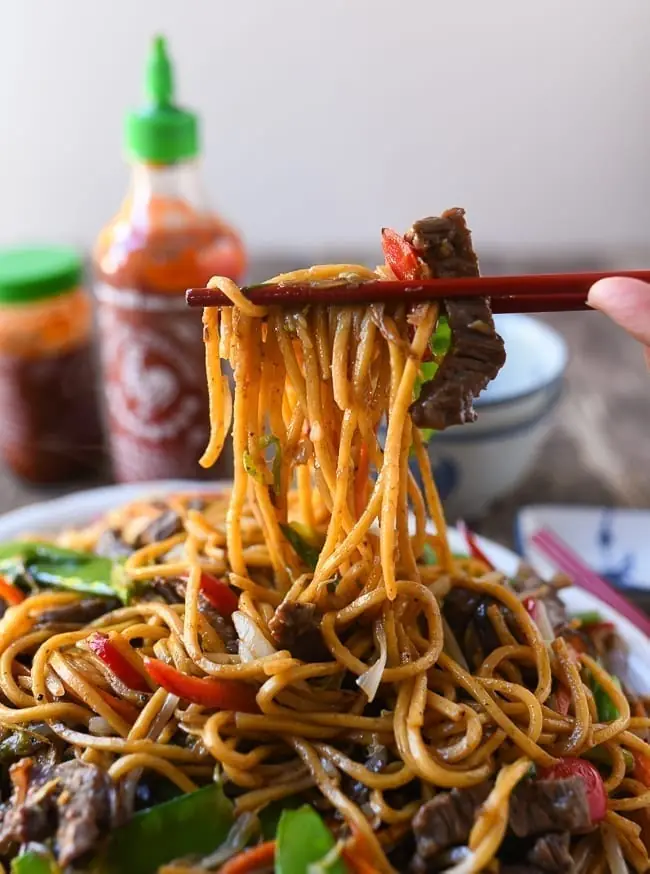

Beef Lo Mein
- Total time45 mins
- Serves6
- Ingredients24
- Steps11

Ingredients
For the beef and marinade
- 12 ounces flank steak
- 1 teaspoon cornstarch
- 1 teaspoon soy sauce
- 1 teaspoon vegetable oil
- 1/4 teaspoon baking soda
For the sauce
- 1 tablespoon light soy sauce
- 1 tablespoon oyster sauce
- 2 teaspoons dark soy sauce
- 1/2 teaspoon sesame oil
- 1/2 teaspoon salt (or to taste)
- 1/4 teaspoon sugar
- 1/4 teaspoon white pepper
To complete the dish
- 1 pound fresh lo mein noodles
- 1 clove garlic (minced)
- 1 carrot (medium carrot, julienned)
- 1/2 red bell pepper (julienned)
- 1/2 cup mushrooms (sliced)
- 1/2 cup bamboo shoots (strips or sliced)
- 2 cups Napa cabbage (shredded)
- 2/3 cup snow peas
- 2 cups mung bean sprouts
- 2 tablespoons vegetable oil (divided)
- 1 tablespoon Shaoxing wine
- 2 scallions (julienned, white and green parts separated)
Directions
- Slice the beef into thin strips against the grain. Place the sliced beef in a small bowl with baking soda, corn starch, soy sauce, and oil. This velveting step will make the beef tender and flavorful, with a glistening look. Set aside to marinate for 30 minutes.
- Prepare the lo mein sauce by combining the soy sauce, oyster sauce, dark soy sauce, sesame oil, salt, sugar, and ground white pepper in a small bowl.
- If using cooked lo mein noodles, rinse them under hot tap water to loosen them and drain thoroughly. If using uncooked noodles, cook them according to package instructions until they're al dente, and drain thoroughly. Set aside. Prepare the garlic and all the vegetables to have them ready for cooking. Arrange them in the order you will add them to the wok.
- Place your wok over high heat until it's smoking lightly. Add 1 tablespoon of vegetable oil to coat the wok, and add the beef so it's all in one layer on the hot wok surface. Sear each side for about 30 seconds. Remove the beef from the wok and set aside.
- Add another tablespoon of oil, along with the garlic, carrots, peppers, and mushrooms. Stir-fry for 30 seconds.
- Add the bamboo shoots and the white parts of the scallions. Stir-fry for another 20 seconds, and then add the napa cabbage. Make sure your heat is at its highest now, and stir-fry everything together for another 30 seconds.
- Add the prepared noodles. They should be warm or at room temperature, and not stuck together! If they are, just rinse them in hot water to loosen them up.
- Add the Shaoxing wine around the perimeter of the wok, and toss the vegetables and noodles together using a scooping motion. After the noodles are warmed up (about 30 seconds to 1 minute), and your pre-mixed sauce.
- Continue stir-frying with a scooping motion until the sauce is evenly distributed, making sure to scrape the bottom of the wok to prevent the noodles from sticking. High heat and a well-seasoned wok should also prevent any sticking.
- Next, add the snow peas, mung bean sprouts, and beef (along with any juices that may have collected in the bowl). Continue stir-frying until the noodles are heated through and everything is thoroughly mixed.
- Toss in the green parts of the scallions, and taste the lo mein. Adjust the seasoning to your liking (feel free to add more salt, soy sauce, oyster sauce, sesame oil, or white pepper according to your own palate). Plate and serve with homemade chili oil or hot sauce on the side!
Recipe credit: thewoksoflife.com